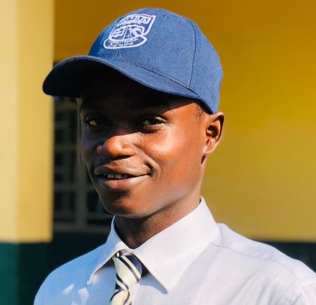

Lansana Jusu | WDD 130
Hello! My name is Lansana Jusu. I am from Kenema, Sierra Leone. I am from a family of five(5) in which I am the second born to my parents. Four of us are male. I am not only cool but a perfect Gentle Man enduring every difficult moment to succeed in this life. I enjoy watching football which is my favorite sport. By profession I am a community developer, Marketing specialist, content creator and an indexer. I'm currently a BYU Idaho student pursuing a course in Software development. I hope to become a software engineer in the future which is the reason why I am embarking on this life long journey of training and learning. At present I'm working with Carifikaglobal.org, serving in the capacity of the Chairman Marketing and innovation. I'm also working with GSM as an indexer at Crescendo-work-study. I am grateful to my heavenly father for all what I have achieved in this life is through him.